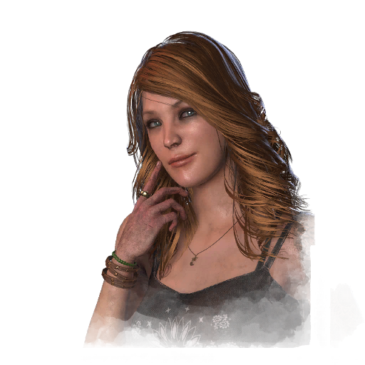

凯特·丹森 Kate Denson
- 性别
- 女性
- 出身
- 美国人
- 演员
- Daphné Poulin Gourdeau (BHVR)
背景故事
凯特·登森最早的记忆之一，是站在家人面前，唱着一首当天早上刚在学校学的歌，看着笑容在每个人脸上蔓延开来。一首歌竟能如此简单地让人感到幸福——那就是她知道自己这一生想要做什么的时刻。她刻苦练习，只要个子长到能够得着吉他，就立刻学会了弹奏；八岁那年，她已经站在人群面前表演了。她的母亲竭尽所能去实现凯特的梦想，带着她走遍宾夕法尼亚州，又一路南下，甚至亲自前往纳什维尔。凯特参加 folk音乐比赛和才艺show,从不落空，总能拔得头筹——但对她来说，赢就意味着别人得输，而那并非她的本性。她只想要一个出口，一种触动他人生命的方式。让他们忘却世间的烦忧，只是尽情享受，哪怕只是一小会儿。
随着年龄增长，她获得了 newfound 的自由。她买了一辆破旧的老雪佛兰卡车，从此能独自四处旅行 wherever 她停下脚步，去见粉丝，结交新朋友。可她的故事并不是纸醉金迷的摇滚范儿：只有公路、她的吉他，也许再来一杯波本威士忌，为一天画上句号。从烈日当空的音乐节到昏暗温馨的小酒吧，人们涌向她的歌声，涌向她亲手写下的关于友谊、家人、爱情与故乡的歌。那些情感并不只是嘴上说说：她总是尽可能 frequent 地回家，帮衬自己的社区，也为那里的人们带去欢娱——
专属技能
通用技能 任意逃生者均可使用
寻宝专家
Artefact Hunter
执念之缚
Bound by Obsession
黑暗感知
Dark Sense
坚持到底
Down to the Last
似曾相识
Déjà Vu
希望
Hope
同族
Kindred
最后站立
Last Standing
轻装上阵
Lightweight
不抛弃任何人
No One Left Behind
过度自信
Overconfidence
掠夺者直觉
Plunderer's Instinct
预兆
Premonition
韧性
Resilience
滑溜之躯
Slippery Meat
小猎手
Small Game
背脊发凉
Spine Chill
这不是真的
This Is Not Happening
硬跑者
Tough Runner
我们能行
We'll Make It
求生意志
Will to Live
附加品
- 暂无数据。